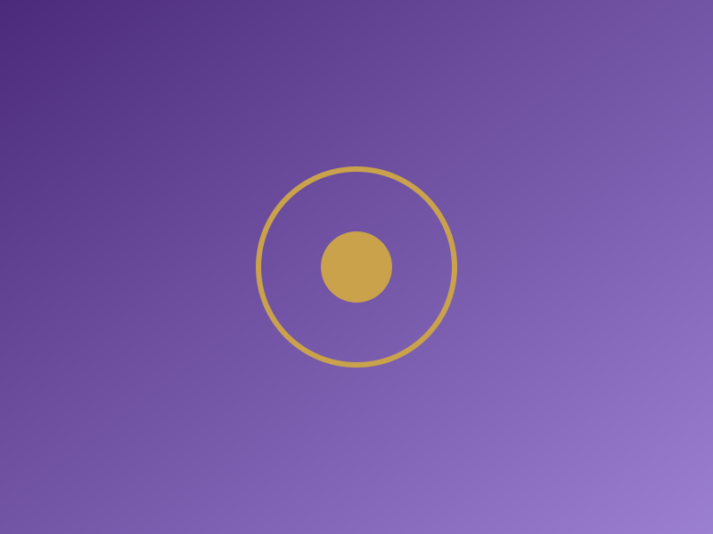
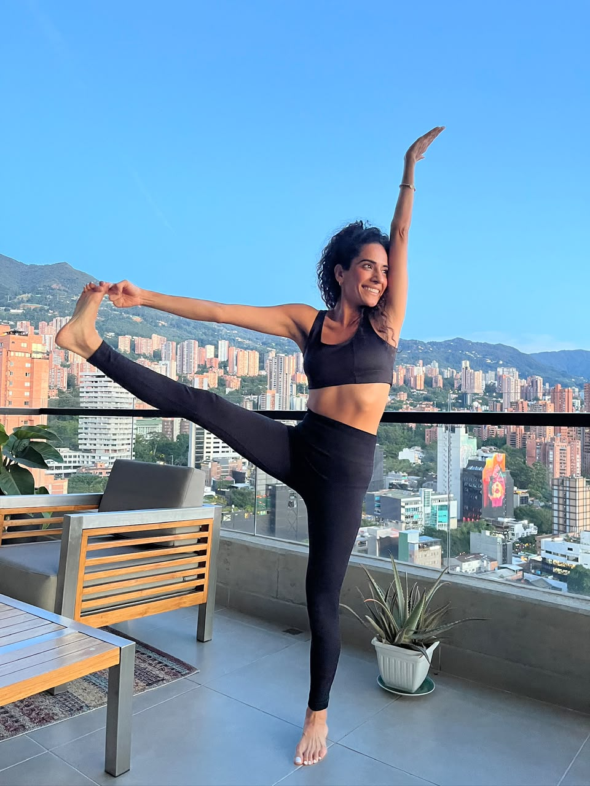

REGRESO
Vuelve a tu esencia. Acompañamiento espiritual con canalizaciones, péndulo, tarot evolutivo y reiki.
Reserva tu sesiónBienvenido a este espacio!
Hola, soy Angélica. A los 19 años comencé a reconocer y comprender algo que me acompañaba desde mi nacimiento. Mi mamá me contaba que desde pequeña me sucedían cosas que ella llamaba «raritas». Con el tiempo, entendí que aquello que para ella era extraño formaba parte de mi propia manera de percibir el mundo.
Hoy, a mis 39 años, he dejado de intentar comprenderlo todo con la mente y he aprendido a relacionarme con este don desde la escucha, la confianza y el amor.
A lo largo de mi camino me he formado en distintas herramientas, y el yoga se ha convertido en uno de mis grandes amores. Sin embargo, creo que el conocimiento se estudia, mientras que la sabiduría nace de una conexión más profunda con Dios Padre-Madre.
En mis canalizaciones recibo mensajes a través de imágenes, emociones y palabras. Para cuidar la espontaneidad de este proceso, te pediré que no me compartas información previa sobre tu historia.
Mi intención es que, al llegar aquí, te sientas en casa. Que encuentres un espacio donde puedas sentirte escuchada, acogida y acompañada con respeto, sin necesidad de ser alguien distinto de quien eres.
Te doy la bienvenida a Regreso. Un espacio para volver a ti, desde el amor y la luz.
